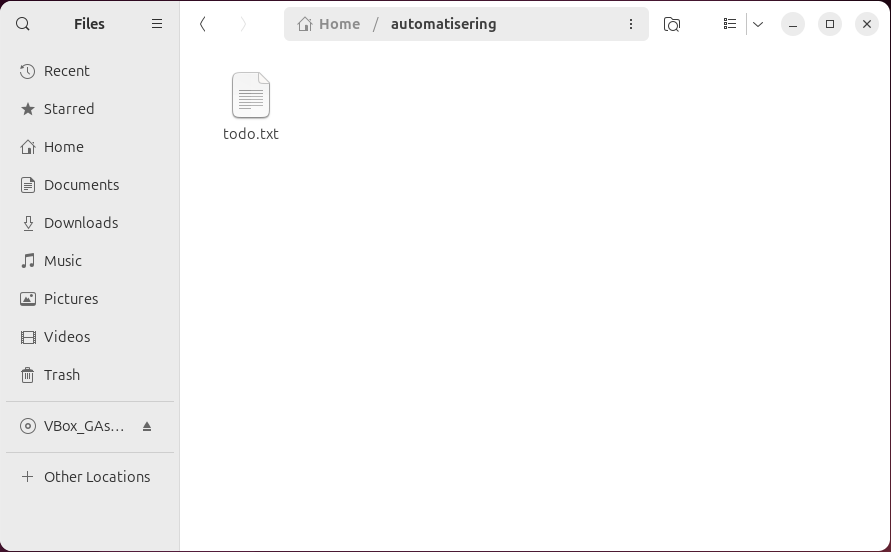

Met cp, van copy, maak je een tweede exemplaar van een bestand of van een map. Je
zet er twee dingen achter: eerst waarvan je kopieert, dan waarheen.
Ga naar je eigen map en kijk of de drie mappen van de vorige pagina er staan.
total 100K drwxr-xr-x 18 elm elm 4.0K Apr 9 17:49 . drwxr-xr-x 3 root root 4.0K Apr 9 10:18 .. drwxr-xr-x 2 elm elm 4.0K Apr 9 16:39 automatisering drwxr-xr-x 2 elm elm 4.0K Apr 9 10:23 Desktop drwxr-xr-x 2 elm elm 4.0K Apr 9 10:23 Documents drwxr-xr-x 2 elm elm 4.0K Apr 9 10:23 Downloads drwxr-xr-x 3 elm elm 4.0K Apr 9 17:03 elektromechanica drwxr-xr-x 2 elm elm 4.0K Apr 9 17:49 klimatisering drwxr-xr-x 2 elm elm 4.0K Apr 9 10:23 Music drwxr-xr-x 2 elm elm 4.0K Apr 9 16:13 Pictures drwxr-xr-x 2 elm elm 4.0K Apr 9 10:23 Public drwxr-xr-x 2 elm elm 4.0K Apr 9 10:23 Templates drwxr-xr-x 2 elm elm 4.0K Apr 9 10:23 Videos
Staat er een van de drie niet bij, maak ze dan eerst alsnog aan met mkdir.
Kopieer todo.txt van je bureaublad naar automatisering, en daarna van
daaruit naar elektromechanica. Vul de paden aan met TAB.
Een geslaagd cp zegt niets terug. Dat is normaal: de meeste commando's in Linux
zwijgen wanneer alles goed gegaan is en spreken alleen bij een probleem.
Kijk in Files of het bestand in automatisering staat.

Controleer hetzelfde in de terminal.
total 12K drwxr-xr-x 2 elm elm 4.0K Apr 9 18:05 . drwxr-xr-x 18 elm elm 4.0K Apr 9 17:49 .. -rw-r--r-- 1 elm elm 26 Apr 9 18:05 todo.txt
Maak in automatisering drie extra tekstbestanden bij: a.txt,
b.txt en c.txt. Gebruik daarvoor nano of vi;
de bestanden mogen leeg blijven.
total 12K drwxrwxr-x 2 elm elm 4.0K Sep 4 14:28 . drwxr-x--- 21 elm elm 4.0K Sep 4 14:16 .. -rw-rw-r-- 1 elm elm 0 Sep 4 13:58 a.txt -rw-rw-r-- 1 elm elm 0 Sep 4 13:58 b.txt -rw-rw-r-- 1 elm elm 0 Sep 4 13:58 c.txt -rw-rw-r-- 1 elm elm 26 Sep 4 13:55 todo.txt
Maak onder /home/elm een map backup aan.
Om nu alle bestanden van automatisering naar backup te krijgen, zou je ze één
voor één kunnen opnoemen:
cp automatisering/todo.txt backup/todo.txt cp automatisering/a.txt backup/a.txt cp automatisering/b.txt backup/b.txt cp automatisering/c.txt backup/c.txt
Bij vier bestanden gaat dat nog, bij vierhonderd niet. Daarvoor bestaat de wildcard *, die
voor elke naam in die map staat.
Kopieer alle bestanden in één commando.
total 12K drwxrwxr-x 2 elm elm 4.0K Sep 4 14:29 . drwxr-x--- 21 elm elm 4.0K Sep 4 14:16 .. -rw-rw-r-- 1 elm elm 0 Sep 4 14:29 a.txt -rw-rw-r-- 1 elm elm 0 Sep 4 14:29 b.txt -rw-rw-r-- 1 elm elm 0 Sep 4 14:29 c.txt -rw-rw-r-- 1 elm elm 26 Sep 4 14:29 todo.txt
Meer over wat het sterretje precies vervangt, staat bij Een commando en zijn opties.
Ga naar je eigen map en probeer automatisering te kopiëren naar een nieuwe map
2auto.
cp: -r not specified; omitting directory 'automatisering/'
Controleer dat er inderdaad niets gebeurd is: er staat geen map 2auto.
total 132K drwxr-x--- 20 elm elm 4.0K Sep 4 14:00 . drwxr-xr-x 3 root root 4.0K Aug 22 15:41 .. drwxrwxr-x 2 elm elm 4.0K Sep 4 13:58 automatisering drwxrwxr-x 2 elm elm 4.0K Sep 4 14:01 backup -rw------- 1 elm elm 105 Aug 27 11:03 .bash_history ...
De foutmelding noemt zelf de optie die ontbreekt. Zoek op wat ze doet.
Usage: cp [OPTION]... [-T] SOURCE DEST
or: cp [OPTION]... SOURCE... DIRECTORY
or: cp [OPTION]... -t DIRECTORY SOURCE...
Copy SOURCE to DEST, or multiple SOURCE(s) to DIRECTORY.
...
-R, -r, --recursive copy directories recursively
...
Recursive betekent dat de map meegaat met alles wat eronder staat, tot de laatste map in de laatste map.
Probeer het opnieuw met -r. Haal het vorige commando terug met pijl
omhoog in plaats van het volledig te typen, en zet er de optie tussen.
total 136K
drwxr-x--- 21 elm elm 4.0K Sep 4 14:16 .
drwxr-xr-x 3 root root 4.0K Aug 22 15:41 ..
drwxrwxr-x 2 elm elm 4.0K Sep 4 14:16 2auto
drwxrwxr-x 2 elm elm 4.0K Sep 4 13:58 automatisering
drwxrwxr-x 2 elm elm 4.0K Sep 4 14:01 backup
-rw------- 1 elm elm 105 Aug 27 11:03 .bash_history
drwxr-xr-x 2 elm elm 4.0K Sep 4 13:54 Desktop
drwxrwxr-x 2 elm elm 4.0K Sep 4 13:56 elektromechanica
drwxrwxr-x 2 elm elm 4.0K Sep 4 13:54 klimatisering
...
-r betekent daar hetzelfde: de map en alles eronder. Wat je zo wist, komt niet terug,
en dat is de volgende pagina.